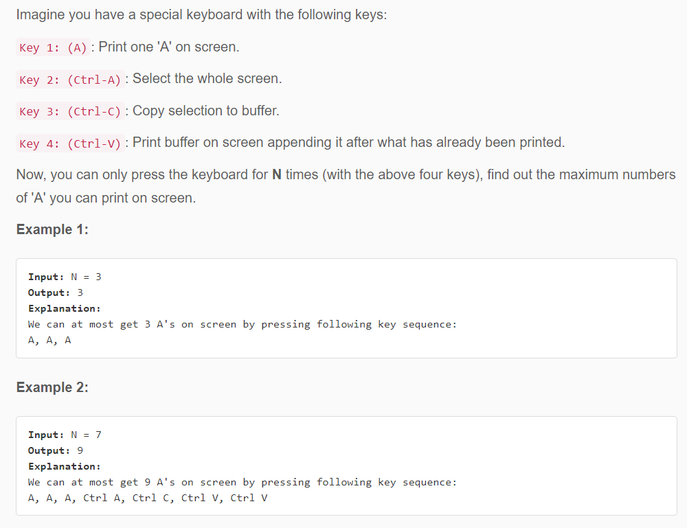
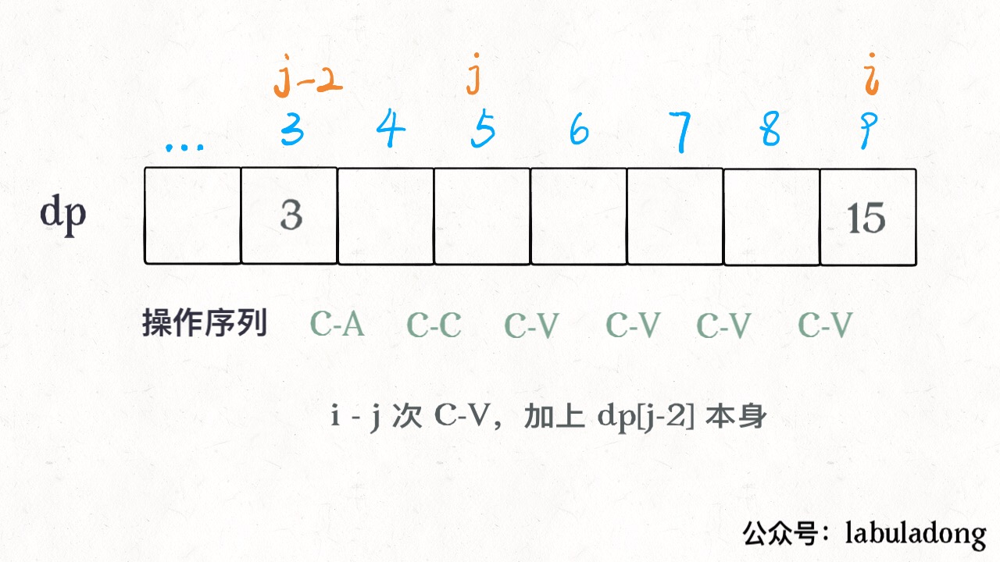

Translator: upbin
The problem of 4 keys keyboard is very interesting and can broaden one’s horizon. This problem can make you obviously feel that different definitions of dp arrays need completely different logic to think about, and this logic can produce completely different solutions.
We can’t wait to solve this problem:

After reading the question, think about how to get the maximum number of characters ‘A’ after typing N
times on the keyboard? We are more familiar with trying questions using enumeration. Whenever we want to press the
keyboard (and can press it), there are 4 buttons for us to choose from, we can enumerate every possible
operation It is obvious that this is a dynamic programming problem.
This kind of problem-solving idea is easy to understand, but the efficiency is not high. We follow the routine directly: for dynamic programming problems, we must first understand which are [ states ] and which are [ choices ].
Specific to this problem, what choices are obvious for each keystroke: four types are the
4 keys mentioned in the title, which are A, Ctrl-A, Ctrl-C,
and Ctrl-V.
Next, let’s think about what are the states of this problem? In other words, what information do we need to know to break down the original problem into smaller subproblems?
Now you think about it, Is it correct for me to define the status of this problem as follows?
n to represent it.
a_num.copy.By defining state in this way, we can know the base case: when the number of
remainingn is 0, a_num is the answer we want.
Combining the four choices just mentioned, we can express these kinds of choices through state transitions:
dp(n - 1, a_num + 1, copy)
# [ A ]
# comment: Press the 'A' key to add a character to the screen.
# Subtract 1 at the same time the number of times you are allowed to press the
keyboard.
dp(n - 1, a_num + copy, copy) # [Ctrl-V]
# comment: Press C-V to paste, the characters in the clipboard are added to the
screen.
# Subtract 1 at the same time the number of times you are allowed to press the
keyboard.
dp(n - 2, a_num, a_num) # [Ctrl-A] &
[Ctrl-C]
# comment: Ctrl + A and Ctrl + C can obviously be used together.
# The number of 'A' in the clipboard becomes the number of 'A' on the
screen.
# Subtract 2 at the same time the number of times you are allowed to press the
keyboard.
By describing this, we can see that the scale of the problem n is constantly decreasing, and finally
we can reach the base case of n == 0. So this idea is correct: (Do you think so?)
def maxA(N: int) ->
int:
# It can be verified that for the initial (n, a_num, copy) state,
# there can be at most dp (n, a_num, copy) 'A' on the screen.
def dp(n, a_num, copy):
# base case
if n <= 0: return
a_num;
# Let ’s try all three options and choose the largest one.
return max(
dp(n - 1, a_num + 1, copy), # [ A
]
dp(n - 1, a_num + copy, copy), #
[Ctrl-V]
dp(n - 2, a_num, a_num) # [Ctrl-A] & [Ctrl-C]
)
# You can press the key n times, then there is no 'A' in the screen
# and the clipboard.
return dp(N, 0, 0)
This solution should be well understood because it is semantically explicit.
Below we continue to follow the routine and use memorized search to eliminate those overlapping sub-problems:
def maxA(N: int) ->
int:
# memorandum
memo = dict()
def dp(n, a_num, copy):
if n <= 0: return
a_num;
# Avoid overlapping subproblems being recalculated
if (n, a_num, copy) in memo:
return memo[(n, a_num, copy)]
memo[(n, a_num, copy)] = max(
# These options are still the same
) return memo[(n, a_num, copy)]
return dp(N, 0, 0)
After we optimized our code in this way, although the sub-problem was repeatedly solved, the number of searches was still very large (if we submit to LeetCode it will definitely time out).
Now let’s try to analyze the time complexity of the algorithm just now. The challenge is that this analysis is not easy. No matter what it is, now we write this dp function as a dp array:
dp[n][a_num][copy]
// The total number of states (spatial complexity) of this problem
// is the volume of this three-dimensional array.
We know that the maximum value of the variable n is N, but it is difficult to calculate
the maximum number of a_num and copy. The lowest complexity is O(N^3). So the
algorithm just now is not good, the complexity is too high, and it can no longer be optimized.
The more embarrassing thing is that this also shows that I used to define state as it is not very good. Let’s change the idea of defining this dp problem.
Next, our thinking is a little more complicated, but it is very efficient.
Continue to follow our routine, choice has been defined before, or the 4. But this
time
we only need to define a state, which is the remaining number of available keyboard presses
n.
This algorithm is based on the following fact. There must be only two cases of the key sequence corresponding to the optimal answer:
A, A, … , A (more when N is
smaller).
A, A, …, Ctrl-A, Ctrl-C,
Ctrl-V, Ctrl-V, …, Ctrl-V (mostly when N is larger). (Here
you can find some mathematical rules, you can study if you are interested)
Because when the number of characters to be printed is relatively small (N is small),
“Ctrl-A, Ctrl-C, Ctrl-V” consumes a relatively high number of operations, so
we might as well keep pressing A. When N is relatively large, the gain of
Ctrl-V in the later period is definitely relatively large. In this case, the entire operation sequence
is roughly like this: at the beginning, press several ’A’s, then Ctrl-A, Ctrl-C, and
finally several Ctrl-V, and then continue Ctrl-A -> Ctrl-C -> Ctrl-V Such a loop
operation.
In other words, the last keystroke was either A or Ctrl-V. As long as we are clear on
this,
we can design the algorithm through these two situations:
int[] dp = new int[N + 1];
// Definition: dp[i] indicates the maximum number of 'A' that can be displayed after the // first operation.
for (int i = 0; i <= N; i++)
dp[i] = max(
// Press [ A ] this time,
// This time press [Ctrl-V].
)
Think about it. For the case of [pressing the A key], it is actually a new ‘A’ printed on the screen
of state i-1, so it is easy to get the result:
However, if we want to press Ctrl-V, we also need to consider where we did Ctrl-A and
Ctrl-C.
Earlier we said that the optimal sequence of operations must be Ctrl-A, Ctrl-C followed
by several Ctrl-V, so we use a variable j as the starting point for these
Ctrl-V operations. Then the two operations before j should be Ctrl-A and
Ctrl-C:
public int maxA(int N) {
int[] dp = new int[N + 1];
dp[0] = 0;
for (int i = 1; i <= N; i++) {
// press [ A ]
dp[i] = dp[i - 1] + 1;
for (int j = 2; j < i; j++) {
// [Ctrl-A] & [Ctrl-C] -> dp[j-2], Paste i-j times
// There are { dp[j-2] * (i-j+1) }number of 'A' on the screen
dp[i] = Math.max(dp[i], dp[j - 2] * (i - j +
1)); }
}
// What is the maximum number of 'A' after N keystrokes?
return dp[N];
}
The j variable minus 2 is used to save the number of operations available to
Ctrl-A, Ctrl-C. See the description picture to understand:

We have just completed this algorithm. The time complexity of the algorithm is O(N^2) and the space complexity is O(N), so this solution seems to be very efficient.
Dynamic programming is difficult to find the state transition. The different definitions we set will produce different state transition logic. Although we can all get the correct results in the end, the efficiency of the program may have amazing differences.
Let’s review the method we tried for the first time. Although the overlapping sub-problem has been eliminated, the efficiency of the program is still low, but where is the low? Let’s abstract the recursive framework to find out:
def dp(n, a_num, copy):
dp(n - 1, a_num + 1, copy), # [ A ]
dp(n - 1, a_num + copy, copy), # [Ctrl-V]
dp(n - 2, a_num, a_num) # [Ctrl-A] & [Ctrl-C]
Let’s analyze the logic of this exhaustive scheme. Obviously, it is possible to have such a sequence of operations
Ctrl-A, Ctrl+C, Ctrl-A, Ctrl-C, … , or Ctrl-V,
Ctrl-V, … . However, the result of the operation sequence produced by this method is not optimal, even
if we have not figured out a way to circumvent these situations, thereby adding a lot of calculations of unnecessary
sub-problems.
After we review the second solution, we only need to think a little bit before we can think that the operation
sequence of the optimal answer should be this form: A, A, …, Ctrl-A,
Ctrl-C, Ctrl-V, Ctrl-V, …, Ctrl-V.
Based on the findings we found, we redefined state and re-searched for state transition, which logically reduced the number of invalid sub-problems, and ultimately optimized the program’s operating efficiency.